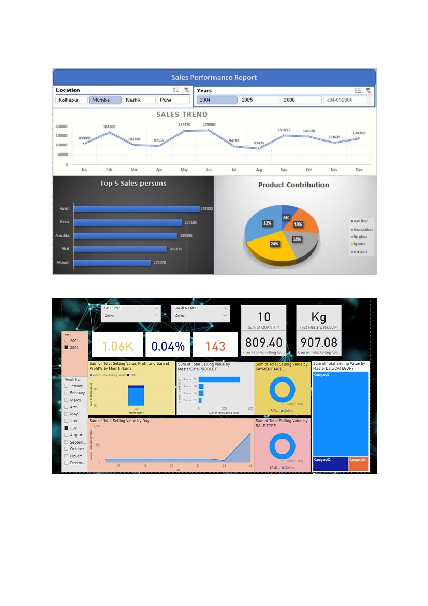
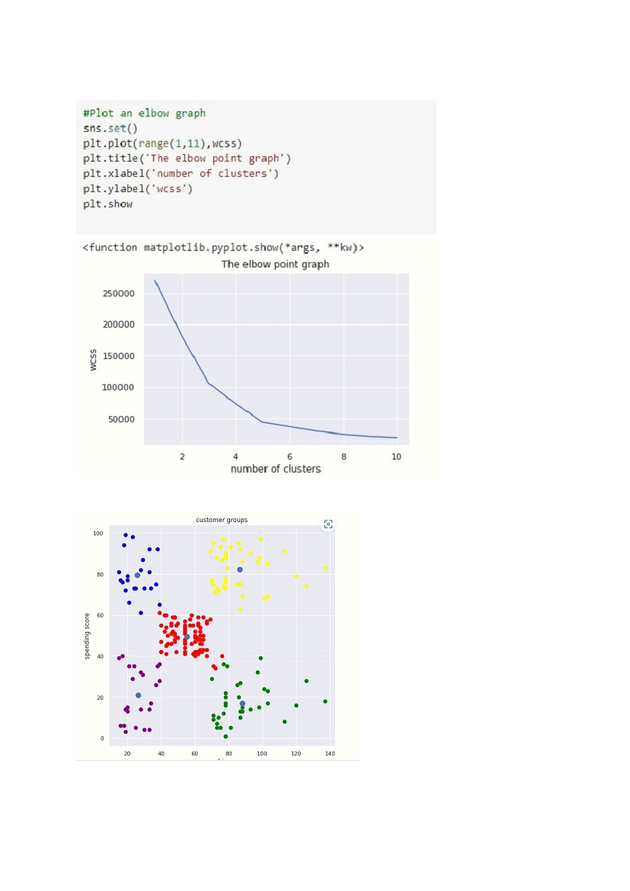

Interactive Dashboards(Excel)
– Using Pivot Chart Fields
Interactive Dashboards (Power BI)
– using power query and pivot tables

Customer Segmentation using K-MEANS
– Elbow Graph to Determine the optimum no of clusters
The Final Output –